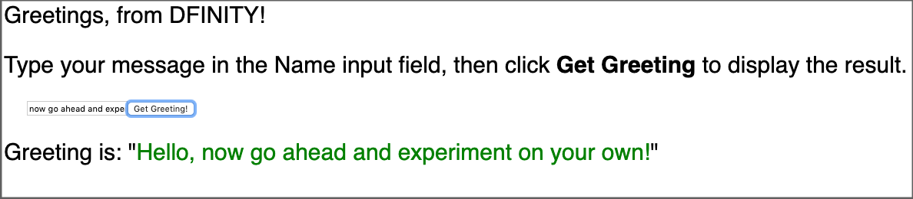

自定义前端
现在您已经对如何创建、构建和部署一个简单的 dapp 有了基本的了解，并且熟悉了默认项目文件和示例前端，您可能想要开始尝试不同的方式来自定义前端用户体验为您的项目。
本教程说明了使用 React 框架为默认示例 dapp 创建一个新的前端，并指导您完成一些基本修改以自定义显示的界面。 稍后的教程将扩展此处介绍的技术，但如果您已经知道如何使用 CSS、HTML、JavaScript 和 React 或其他框架来构建您的用户界面，您可以跳过本教程。
| 本教程说明了使用 React 框架来管理容器智能合约的文档对象模型 (DOM)。 因为 React 有自己的自定义 DOM 语法，所以需要修改 webpack 配置来编译前端代码，前端代码是用 JSX 编写的。有关学习使用 React 和 JSX 的更多信息，请参见 React 网站 上的Getting started。 |
创建一个新项目
为您的自定义前端 dapp 创建一个新项目目录:
-
如果您还没有打开一个终端外壳，请在您的本地计算机上打开一个终端外壳。
-
更改为您用于 Internet Computer 项目的文件夹（如果您正在使用一个）。
-
通过运行以下命令检查您是否在本地安装了
node.js:which node which npm如果你没有安装`node.js`，你应该在继续下一步之前下载并安装它。 有关为本地操作系统和包管理器安装节点的信息，请参阅Node 网站。
-
通过运行以下命令创建一个新项目:
dfx new custom_greetingdfx new custom_greeting命令创建一个新的custom_greeting项目。 -
通过运行以下命令切换到您的项目目录:
cd custom_greeting
安装 React 框架
如果您以前从未使用过 React，您可能想探索Intro to React 教程或React website 在编辑前端代码之前。
要安装所需的框架模块:
-
通过运行以下命令安装 React 模块:
npm install --save react react-dom -
通过运行以下命令安装所需的 TypeScript 语言编译器加载程序:
npm install --save-dev typescript ts-loader作为安装这些模块的替代方法，您可以编辑默认的 +package.json文件来为您的项目添加依赖项。{ "name": "custom_greeting_assets", "version": "0.1.0", "description": "Internet Computer starter application", "keywords": [ "Internet Computer", "Motoko", "JavaScript", "Canister" ], "scripts": { "build": "webpack", "prebuild": "npm run copy:types", "start": "webpack serve --mode development --env development", "prestart": "npm run copy:types", "copy:types": "rsync -avr .dfx/$(echo ${DFX_NETWORK:-'**'})/canisters/** --exclude='assets/' --exclude='idl/' --exclude='*.wasm' --delete src/declarations" }, "devDependencies": { "@dfinity/agent": "0.10.0", "@dfinity/candid": "0.10.0", "@dfinity/principal": "0.10.0", "assert": "2.0.0", "buffer": "6.0.3", "copy-webpack-plugin": "^9.0.1", "events": "3.3.0", "html-webpack-plugin": "5.3.1", "process": "0.11.10", "stream-browserify": "3.0.0", "terser-webpack-plugin": "5.1.1", "util": "0.12.3", "webpack": "5.24.4", "webpack-cli": "4.5.0", "webpack-dev-server": "^3.11.2" }, "browserslist": [ "last 2 chrome version", "last 2 firefox version", "last 2 safari version", "last 2 edge version" ], "dependencies": { "react": "^17.0.2", "react-dom": "^17.0.2", "ts-loader": "^9.2.3", "typescript": "^4.3.5" } }
查看默认配置
在我们对本教程使用 React 进行任何更改之前，让我们回顾一下项目的 dfx.json 配置文件中的默认前端设置。
查看默认的 dfx.json 配置文件:
-
在文本编辑器中打开
dfx.json配置文件。 -
请注意，
canisters键包含custom_greeting_assets容器的设置。{ "canisters": { ... "custom_greeting_assets": { "dependencies": [ "custom_greeting" ], "frontend": { "entrypoint": "src/custom_greeting_assets/src/index.html" }, "source": [ "src/custom_greeting_assets/assets", "dist/custom_greeting_assets/" ], "type": "assets" } } }让我们看一下本节中的设置。
-
项目的前端资产被编译到它们自己的容器中，在这种情况下，一个名为
custom_greeting_assets的容器。 -
资产容器默认依赖于项目的主容器。
-
frontend.entrypoint设置指定文件的路径——在本例中为index.html文件——用作你的 dapp 入口点。 如果你有一个不同的起点——例如，一个自定义的first-page.html文件——你可以修改这个设置。 -
source设置指定了src和dist目录的路径。src设置指定用于在构建项目时包含在资产容器中的静态资产的目录。 如果您有自定义级联样式表 (CSS) 或 JavaScript 文件，您可以将它们包含在此路径指定的文件夹中。 构建项目后，项目资产从dist设置指定的目录提供。 -
type设置指定custom_greeting_assets应该使用 certified asset canister，它提供了在 {platform }。
对于本教程，我们将在
index.jsx文件中添加 React JavaScript，但这不需要对dfx.json文件中的默认设置进行任何更改。 .关闭dfx.json文件以继续。 -
查看默认的前端文件
在本教程中，您将通过自定义前端调用默认的 main.mo 容器。
不过，在您进行任何更改之前，让我们看一下项目的默认前端文件中的内容。
查看默认前端文件:
src/custom_greeting_assets/src/index.html 文件。+
此模板文件是 dapp 的默认前端入口点，由 dfx.json 文件中的 frontend.entrypoint 设置指定。
+
此文件包含标准 HTML，其中包含对位于 src/custom_greeting_assets/assets 目录中的 CSS 文件和图像的引用。
默认的 index.html 文件还包括标准 HTML 语法，用于显示 name 参数的输入字段和可点击按钮。
+
这与您在链接中看到的默认前端相同:explore-templates.html#default-frontend[查看默认前端]。
. 在文本编辑器中打开 src/custom_greeting_assets/src/index.js 文件。
+
import { custom_greeting } from "../../declarations/custom_greeting";
document.getElementById("clickMeBtn").addEventListener("click", async () => {
const name = document.getElementById("name").value.toString();
// Interact with custom_greeting actor, calling the greet method
const greeting = await custom_greeting.greet(name);
document.getElementById("greeting").innerText = greeting;
});
+
-
import语句指向一个actor，它允许我们从`"../declarations"` 调用我们的`custom_greeting` 容器 -
声明尚未创建，但我们会回来讨论。
-
关闭
index.js文件以继续。
修改前端文件
您现在已准备好为默认 dapp 创建一个新的前端。
准备前端文件:
-
在文本编辑器中打开 webpack 配置文件（
webpack.config.js）。 -
修改前端入口，将默认的`index.html
替换为index.jsx`.entry: { // The frontend.entrypoint points to the HTML file for this build, so we need // to replace the extension to `.js`. index: path.join(__dirname, asset_entry).replace(/\.html$/, ".jsx"), }, -
Add the following
modulekey above thepluginssection:module: { rules: [ { test: /\.(js|ts)x?$/, loader: "ts-loader" } ] },此设置使项目能够将
ts-loader编译器用于 React JavaScriptindex.jsx文件。 请注意，默认的webpack.config.js文件中有一个注释部分，您可以修改它以添加module键。 -
在项目的根目录中创建一个名为
tsconfig.json的新文件。 -
在文本编辑器中打开
tsconfig.json文件，然后将以下内容复制并粘贴到文件中:{ "compilerOptions": { "target": "es2018", /* Specify ECMAScript target version: 'ES3' (default), 'ES5', 'ES2015', 'ES2016', 'ES2017', 'ES2018', 'ES2019' or 'ESNEXT'. */ "lib": ["ES2018", "DOM"], /* Specify library files to be included in the compilation. */ "allowJs": true, /* Allow javascript files to be compiled. */ "jsx": "react", /* Specify JSX code generation: 'preserve', 'react-native', or 'react'. */ }, "include": ["src/**/*"], } -
保存更改并关闭
tsconfig.json文件以继续。 -
在文本编辑器中打开默认的
src/custom_greeting_assets/src/index.js文件并删除第 2 到 9 行。 -
将以下示例代码复制并粘贴到
index.js文件中:import * as React from "react"; import { render } from "react-dom"; import { custom_greeting } from "../../declarations/custom_greeting"; const MyHello = () => { const [name, setName] = React.useState(''); const [message, setMessage] = React.useState(''); async function doGreet() { const greeting = await custom_greeting.greet(name); setMessage(greeting); } return ( <div style={{ "fontSize": "30px" }}> <div style={{ "backgroundColor": "yellow" }}> <p>Greetings, from DFINITY!</p> <p> {" "} Type your message in the Name input field, then click{" "} <b> Get Greeting</b> to display the result. </p> </div> <div style={{ margin: "30px" }}> <input id="name" value={name} onChange={(ev) => setName(ev.target.value)} ></input> <button onClick={doGreet}>Get Greeting!</button> </div> <div> Greeting is: " <span style={{ color: "blue" }}>{message}</span>" </div> </div> ); }; render(<MyHello />, document.getElementById("app")); -
通过运行以下命令将修改后的
index.js文件重命名为index.jsx:mv src/custom_greeting_assets/src/index.js src/custom_greeting_assets/src/index.jsx -
在文本编辑器中打开默认的
src/custom_greeting_assets/src/index.html文件，然后将正文内容替换为<div id="app"></div>.例如:
<!doctype html> <html lang="en"> <head> <meta charset="UTF-8"> <meta name="viewport" content="width=device-width"> <title>custom_greeting</title> <base href="/"> <link type="text/css" rel="stylesheet" href="main.css" /> </head> <body> <div id="app"></div> </body> </html>
启动本地容器执行环境
在构建 custom_greeting 项目之前，您需要连接到实时 Internet Computer platform 或在您的开发环境中本地运行的容器执行环境。
在本地启动环境:
-
在本地计算机上打开一个新的终端窗口或选项卡。
-
如有必要，导航到项目的根目录。
-
通过运行以下命令在本地计算机上启动本地容器执行环境:
dfx start --background本地容器执行环境完成启动操作后，可以继续下一步。
注册、构建和部署 dapp
连接到本地容器执行环境后，您可以在本地注册、构建和部署 dapp。
要在本地部署 dapp:
-
如果需要，请检查您是否仍在项目的根目录中。
-
通过运行以下命令注册、构建和部署您的 dapp:
dfx deploydfx deploy命令输出显示有关它执行的操作的信息。
查看新的前端
您现在可以通过在浏览器中输入资产容器的容器标识符来访问默认 dapp 的新前端。
查看自定义前端:
-
打开终端的新选项卡或窗口并运行
npm start -
打开浏览器并导航到 http://localhost:8080。
-
确认系统提示您键入问候语。
例如:

-
将输入字段中的 Name 替换为您要显示的文本，然后单击 Get Greeting 以查看结果。
例如:

修改前端并测试您的更改
查看前端后，您可能需要进行一些更改。
修改前端:
-
在文本编辑器中打开
index.jsx文件并修改其样式设置。 例如，您可能想要更改字体系列并通过进行类似于以下的更改来为输入字段使用占位符:import * as React from "react"; import { render } from "react-dom"; import { custom_greeting } from "../../declarations/custom_greeting"; const MyHello = () => { const [name, setName] = React.useState(''); const [message, setMessage] = React.useState(''); async function doGreet() { const greeting = await custom_greeting.greet(name); setMessage(greeting); } return ( <div style={{ "fontFamily": "sans-serif" }}> <div style={{ "fontSize": "30px" }}> <p>Greetings, from DFINITY!</p> <p> {" "} Type your message in the Name input field, then click{" "} <b> Get Greeting</b> to display the result. </p> </div> <div style={{ margin: "30px" }}> <input id="name" placeholder="Type text here" value={name} onChange={(ev) => setName(ev.target.value)} ></input> <button onClick={doGreet}>Get Greeting!</button> </div> <div> Greeting is: " <span style={{ color: "green" }}>{message}</span>" </div> </div> ); }; render(<MyHello />, document.getElementById("app")); -
保存文件并在浏览器中查看更新的页面。
例如:

-
键入新消息并查看您的新问候语。 例如:
